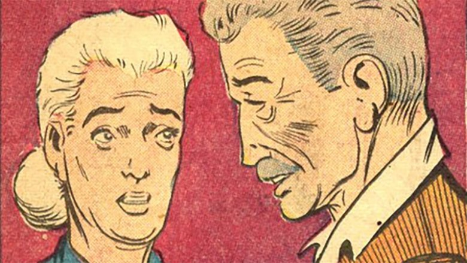
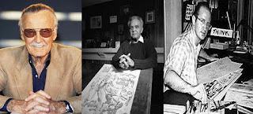

Backstory
Teenage orphan Peter Parker resided with his Aunt May and Uncle Ben in Queens, New York. Despite being a timid child, he was extremely brilliant and excelled at science. He was frequently made fun of by other, more popular youngsters, including his lifelong foe Flash Thompson, but a trip to the science museum will soon alter everything.
Peter got bitten by a radioactive spider at the science museum. Peter now has spider-like abilities with enhanced strength and reflexes thanks to the spider bite. Additionally, he developed a "spider-sense" that warned him of danger. With his newfound abilities, Peter turned to fame and wealth before turning to combating criminals. He participated in the wrestling scene, gained some notoriety, and made an appearance on television. Peter gets the chance to stop the thief during a heist of the television programme but decides not to.
Peter learns later that his Uncle Ben was killed in a battle when the same thief who may have been stopped at the television studio tried to loot his aunt and uncle's home. Peter is motivated to fight crime rather than seek celebrity by his late uncle's adage, "With great power comes great responsibility." The real Spider-Man was born.
Creation of Spiderman
Three distinct individuals combined their efforts to create Spider-Man. Stan Lee had the original notion to have a youthful, "regular," teenage hero. Lee had presented this concept to Jack Kirby, who was then his lead artist. Following a meeting, Lee instructed Kirby to sketch the character and a few additional scenarios for the potential first appearance. One or two days after their initial meeting, Kirby gave Lee his first few sketches of the Silver Spider, who he had given the moniker Silver Spider. Lee didn't agree with how Kirby created the Silver Spider's persona. Lee even said that Kirby's creation was too "heroic" for what he was going for. At this point, Lee discontinued working with Jack Kirby and approached the recently departed Steve Ditko with his concept for a young adolescent hero with genuine concerns and spider-like abilities. Steve would take Jack's concept for a web gun and outfit and transform them into his own creations. Ditko substituted wrist-mounted web shooters for the web cannon. He also developed the concept for the possible hero's outfit, which was the well-known and adored red and blue spider uniform. Peter Parker would never have been bitten by that radioactive spider without them.
The Villians
Spider-Man's biggest villians vary from octpuses to walking electricity currents. The main villians consist of:
- Doctor Octopus: A scientists who created robotic tentales originally made for patients without legs or arms but he quickly made them a weapon due to his jealousy of Norman Osborn, the Mayor of New York City.
- Electro: A man by the name Maxwell Dillion who got powers of electricity due to him fixing a power line on his birthday and later falls into a pool of electric eels.
- Green Goblin: Norman Osborn would be the Green Goblin, the same Mayor and the founder of Oscorp. He would run a test where he took "Goblin Formula" to improve intelligence, but would later make him the psychotic Green Goblin, a big foe of Spiderman.
- Venom: A photographer by the name Eddie Brock who worked under the same company as Peter, would later get a substance of goo known as a symbiote that would spread around his body making him the fan favourite, Venom. Although Eddie and Venom never had any intentions of your average villian, they were an adversary for Spiderman.
- Rhino: The biggest and strongest villian (on par with Venom) of Spiderman, Rhino, a brute known for his strength that resembles that of a rhino. Alexei was his name and he would use his ridiculous amount of strength to just be a straight up criminal. No backstory, hes just in it for the money.
Every single villian that Spiderman encounters happens to have a bad history with Spiderman or Peter. Thises villians have one thing in common, the downfall of Spiderman. And obviously, the hero always wins, period.
Insomniac Announcement
Many people from young ages, to full fledge adults absolutely love Spider-Man’s character. Whether that be his creative powers of wall crawling and web shooting to him relating to many young teens. The main motto for Spider-Man is "anyone can wear the mask" which gives kids hope that even they can "Be Greater". Insomniac Games is a video game company that uses the motto of being greater in their Spider-Man game. Insomniac Games have recently announced that Spider-Man 2 will be released to the public on October 20th, 2023.